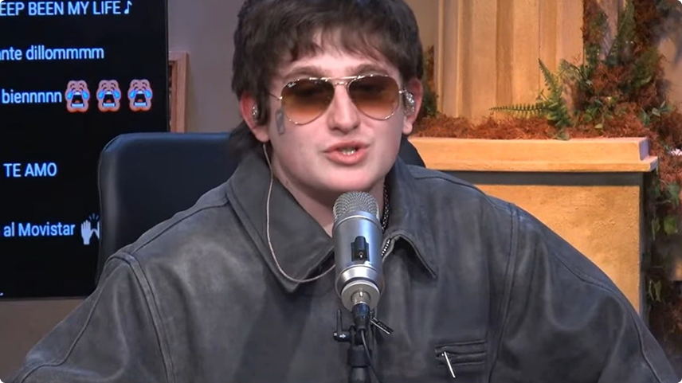
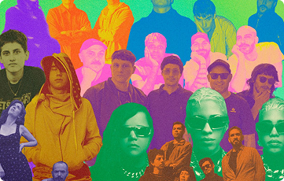
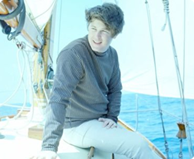
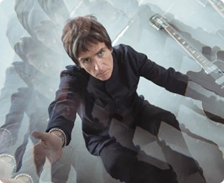
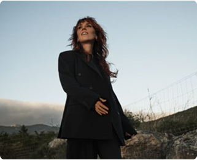
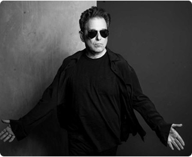
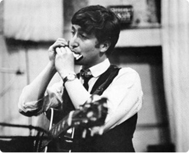
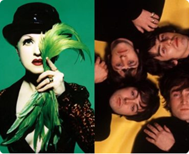
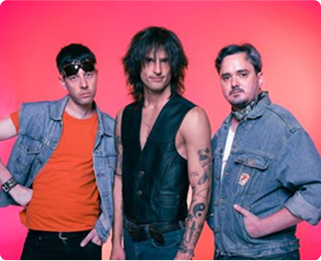
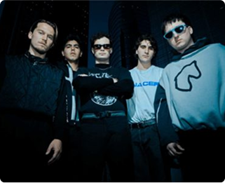

Dillom nombra 3 bandas que está escuchando actualmente
5 curiosidades sobre Debbie Harry

10 lanzamientos para escuchar esta semana
NOTICIAS
ver mas

La última playlist que escuchó Brian Wilson

Johnny Marr explica por qué rechazó la reunión de The Smiths: "No soy tonto"
RECITALES
ver mas

Zaz vuelve a la Argentina: Fecha, lugar y entradas

Andrés Calamaro anuncia shows en Buenos Aires: Fechas, lugar y entradas
HISTORIAS
ver mas

Los 10 mejores solos de armónica de la historia

Cyndi Lauper y su canción favorita de The Beatles: "Me entrenó el oído"
ENTREVISTAS
ver mas

Detonantes: "Nos representa esa esencia cruda y natural del rock"

Vita Set: "El apocalipsis del 2025 es un sálvese quien pueda"